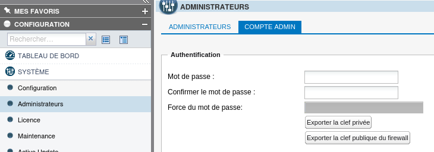
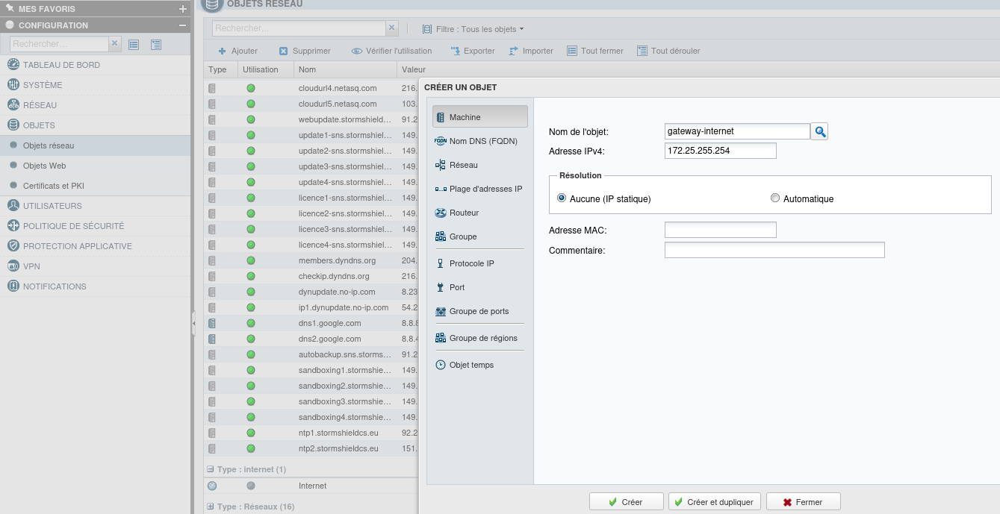
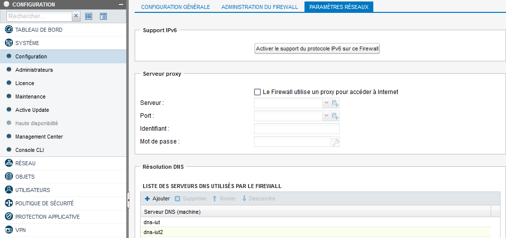
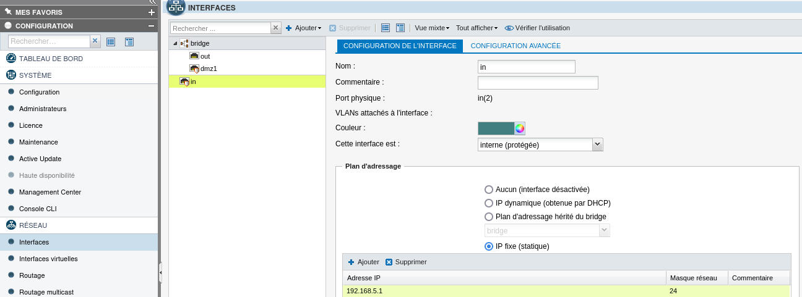
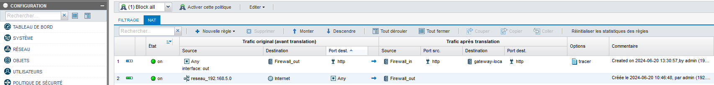
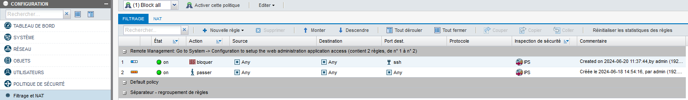

Firewall Installation
Basic Installation
Firewall reset: button behind the firewall.
The default network is 10.0.0.0/8, and the default interface is 10.0.0.254.
Connect a PC to the LAN interface of the firewall by setting an IP address on the same network as the firewall.
Then connect to the firewall's web interface by typing the IP address of the LAN interface of the firewall.
Log in with the default credentials: admin / admin.
General Configuration
Changing the default password:
Go to Configuration -> System -> Administrator -> Admin account

Creating objects:
Objects serve as DNS. Add an object for the different networks and for each machine in the network.
Go to Configuration -> Object -> Network Object

Assigning DNS:
Go to Configuration -> System -> Network Settings

Add the IUT's DNS: 192.168.117.181 and 192.168.117.182b
Interface Configuration
Go to Configuration -> Network -> Interfaces

There are 3 interfaces: "in" corresponds to the LAN, "out" corresponds to the WAN interface, and "dmz" corresponds to the DMZ interface.
Configure the "in" interface by setting the IP address: 192.168.5.1/24
Configure the "out" interface by setting the IP address: 172.25.0.120/16
Add in advanced settings, the default gateway: 172.25.255.254
Routing Configuration
Go to Configuration -> Network -> Routing
Add a static route for the local network: 192.168.3.0/24
NAT Configuration
This allows private IP addresses to be transformed into public IP addresses.
Go to Configuration -> Security Policy -> Filtering - NAT

Rule 1 allows port translation to reach the web server.
Rule 2 allows address translation to access the internet.
Filtering Configuration
This allows controlling and restricting incoming and outgoing connections based on IP addresses and ports. It adds an additional layer of security and control beyond mere IP address masking.
Go to Configuration -> Security Policy -> Filtering - NAT

Rule 1 blocks all connections to the SSH port.
Rule 2 allows all requests to pass.